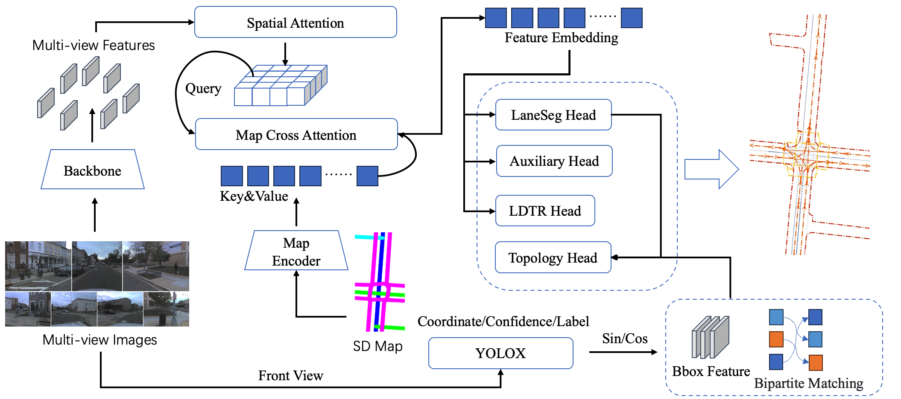

本論文は、CVPR 2024 Autonomous Grand Challenge Mapless Driving（マップレス走行チャレンジ）における技術レポートである（著者：Zhongyu Yang（Didi Chuxing）、Mai Liu（Beijing University of Posts and Telecommunications）ほか）。HDマップに依存しない自動運転は、より高いレベルの能動的シーン理解を要求する。コンペティションではマルチパースペクティブカメラ画像と標準精度地図（SD Map）が提供され、シーン推論能力の限界を探ることが目的であった。
本チームはマルチパースペクティブ画像に加えてSD Mapも入力として活用し、マップエンコーダの事前学習によるネットワークの幾何学的エンコード能力の強化、YOLOXによる交通要素検出精度の向上、LDTRと補助タスクによるエリア検出の高精度化を実現した。最終的なOLUSスコアは0.58を達成した。
マップレス走行は、HDマップに依存しない自動運転車に大きな利点をもたらす。実世界の道路変化により迅速に適応でき、手動マップアノテーションに関連するコストを削減できる。そのため、この領域の課題への取り組みは重要な実用的意義を持つ。
このタスクは、マルチパースペクティブ画像とSD Mapを入力として取り込み、レーンと交通要素の知覚だけでなく、レーン間のトポロジー関係およびレーンと交通要素間のトポロジー関係も要求する。本競技において、LDTR（Lane Detection Transformer）から借用した革新的なエリア予測ヘッドとmapTRv2の補助タスクを導入し、SD MapをBEV特徴マップに統合し、マップエンコーダの事前学習タスクを導入して抽象的なSD Mapの埋め込み学習の問題を解決し、YOLOXを活用して交通要素の検出能力を向上させた。
SD MapはBEVパースペクティブから道路トポロジーを理解するための補助要素として提供され、より長い距離にわたるマップ事前情報を提供する。
2つのSDマップソース（OpenStreetMapとその他）を同じネットワークでエンコードし、最終的にOpenStreetMapのオープンソースSDマップを活用した。このマップは多数のカテゴリと大量の情報を提供し、道路に関する包括的な事前知識を持つ。モデルへの各フレーム入力は、車両のカメラ位置に合わせたSD Mapのローカライズされたビューで構成される。
SMERFの構造を維持し、マップラインはsincos位置エンコーディングでエンコードし、カテゴリ情報はワンホットエンコーディングでエンコードする。これらの特徴を連結した後、Transformerエンコーダで処理してマップ特徴を学習する。SDマップエンコード後の特徴マップGfはキーおよびバリューとして使用され、構築されたBEV特徴によってクエリされる。
SDマップは構造的な事前情報を持つ。マップエンコーダの幾何学的構造エンコード能力を向上させるために、マップエンコーダの事前学習を提案する。事前学習済み重みをロードしたモデルと未ロードのモデルを比較したところ、DETl（レーン検出）が3%、DETa（エリア検出）が1.5%、DETt（交通要素検出）が1.7%改善され、特にTOPll（レーン-レーントポロジー）指標が6%向上した。
BEVFormerをベースに、パースペクティブビュー（PV）特徴をBEVに投影し、BEVドメインでSD Map特徴と画像特徴を融合する。PVとBEVの両方に対する補助前景セグメンテーションタスクを設計し、特徴抽出能力を向上させた。
エリア検出にはmapTRの学習フレームワークを活用し、サラウンドビューとSD Map情報を統合したBEV特徴で動作する。ただし、mapTRのキーポイントをクエリとして使用するアプローチではインスタンスの全体的整合性が弱まることが判明した。そのため、LDTRからヒントを得て、エリアインスタンスを表現するためにアンカーチェーン手法を採用し、MRDAとP2P IoU損失およびコストを使用してこれらのインスタンスを全体的に最適化した。
この手法によりDETaが大きく改善され（0.25から0.34へ36%向上）、DETlが4.5%、TOPllが10%、TOPltが4.9%向上した。
レーンセグメント検出には主にLaneSegNetを採用し、サラウンドビューとSD Map情報を融合したBEV特徴で中心線とレーンライン検出を行う。P2P IoU損失とコストを組み込んでレーンセグメントの全体的な最適化を向上させた。
2Dオブジェクト検出モデルとしてYOLOXを活用し、より高品質なバウンディングボックスを実現した。トレーニングプロセス全体で様々なデータ拡張技術・データリサンプリング・擬似ラベリングを実験し、ベースラインの0.55から0.73へと33%の向上を達成した。
アップストリームバックボーンの特徴とBEV特徴を統合し、lanesegmentのエンコーダを通過させてライン特徴を抽出する。グラウンドトゥルースラインセグメントとの二部マッチングを行い、マッチした正例とマッチしない負例を取得する。これらをトポロジーヘッドに入力し、MLPを通じてライン間のマッチング関係を表す隣接行列を生成する。
トポロジー指標を向上させるために、ネットワークの残りの部分をフリーズしたままトポロジータスクヘッドをファインチューニングした。YOLOXからの物体検出結果を各フレームにインポートし、高品質なバウンディングボックスを提供することで、sincos位置エンコーディングと元のDeformable DETRと比較した二部マッチング結果を使用して検出特徴の品質を向上させた。これにより、レーン-交通トポロジー関係のオンライン推論での予測品質が向上した。
バックボーンネットワークにはResNet-50とInternImage-Lを実験した。学習率は2e-4、オプティマイザーはAdamW、総エポック数は48。
各改善手法の効果を詳細に分析した結果を以下に示す。
SD Map特徴をキーおよびバリューとして使用し、マルチパースペクティブ画像から形成された特徴マップをクエリとしてクロスアテンションを実行した。SDマップの事前情報によってHDマップ構築の品質が大幅に向上した。DETlとDETaがそれぞれ19%と20%大幅に向上。TOPll指標が13%、DETtが9%、TOPltが1.5%向上した。SD Mapはライン特徴を強化でき、マップの固有のトポロジー構造により最終的なライン-ライントポロジーグラフの構築も助けることが確認された。
より多くのパラメータを持つバックボーンも試みた。InternImage-LはそのDCNV3畳み込みにより、CNNの帰納バイアスとマルチヘッドアテンションの両方の利点を持つ。すべての指標にわたって安定した大幅な改善をもたらし、最終指標OLUSが0.3960から0.4486へ13%向上した。
マップエンコーダのマップへの理解を向上させるために事前学習した結果、TOPll指標が6%改善され最大の向上を示した。これは事前学習タスク中に、マップエンコーダが位置エンコードされたSD Mapをエンコーダ出力の特徴マップに変換するプロセスを事前に学習したことで、トポロジー推論に大幅な改善をもたらしたためと考えられる。
LDTRヘッドの導入によりDETaが最も大幅に向上し（0.25から0.34、36%増加）、DETlが4.5%、TOPllが10%、TOPltが4.9%向上した。
P2P IoU損失の導入により、ラインのIoU指標をライン間のマッチング度の監視に組み込み、ライン検出精度を向上させた。DETaが8%、TOPllが7%、DETlが2.1%、TOPltが4.6%、DETtが1.9%向上した。ライン関連の指標に大幅な改善が見られた。
YOLOXからの交通要素検出結果で既存モデルの結果を置き換え、YOLOXの検出結果を活用してsincos位置エンコーディングを通じた特徴と二部マッチング結果の品質を向上させることでトポロジーヘッドをファインチューニングし、TOPlt指標を向上させた。以前のトレーニング結果でDETlとDETaを増加させるとTOPllが低下することが示されていたことから、モデル容量の不足と考えてエリアヘッドのトレーニングを切り離し、最終的にDETaの向上を実現した。
本論文では、SD MapとマルチビューカメライメージのメリットとSDマップ事前学習・LDTRヘッド・補助タスクを組み合わせた、成熟したオブジェクト検出器を活用するネットワークを提案した。
各手法の貢献まとめ：
最終的なOLUSスコアは0.58を達成し、CVPR 2024 Autonomous Grand Challenge Mapless Drivingで優秀な成績を収めた。